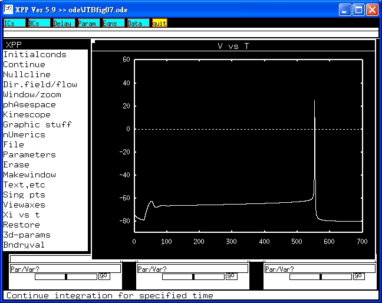

This is the readme.txt for the models associated with the paper Wu SN, Chen BS, Lin MW, Liu YC. Contribution of slowly inactivating potassium current to delayed firing of action potentials in NG108-15 neuronal cells: Experimental and theoretical studies. J Theor Biol 2008;252:711-21 Abstract: The properties of slowly inactivating delayed-rectifier K+ current (IKdr) were investigated in NG108-15 neuronal cells differentiated with long-term exposure to dibutyryl cyclic AMP. Slowly inactivating IKdr could be elicited by prolonged depolarizations from -50 to +50 mV. These outward K+ currents were found to decay at potentials above -20 mV, and the decay became faster with greater depolarization. Cell exposure to aconitine resulted in the reduction of IKdr amplitude along with an accelerated decay of current inactivation. Under current-clamp recordings, a delay in the initiation of action potentials (APs) in response to prolonged current stimuli was observed in these cells. Application of aconitine shortened the AP initiation in combination with an increase in both width of spike discharge and firing frequency. The computer model, in which state-dependent inactivation of IKdr was incorporated, was also implemented to predict the firing behavior present in NG108-15 cells. As the inactivation rate constant of IKdr was elevated, the firing frequency was progressively increased along with a shortening of the latency for AP appearance. Our theoretical work and the experimental results led us to propose a pivotal role of slowly inactivating IKdr in delayed firing of APs in NG108-15 cells. The results also suggest that aconitine modulation of IKdr gating is an important molecular mechanism through which it can contribute to neuronal firing. -------------------------- To run the model: XPP: start with the command xppaut JTBfig07.ode Mouse click on Initialconds, and then (G)o. This makes a trace similar to fig 6 or 7a in the paper of Wu et al. 2008:  Bard Ermentrout's website http://www.pitt.edu/~phase/ describes how to get and use xpp (Bard wrote xpp). The model file was submitted by: Dr. Sheng-Nan Wu Department of Physiology Natl Cheng Kung U Med Coll Tainan 70101, Taiwan